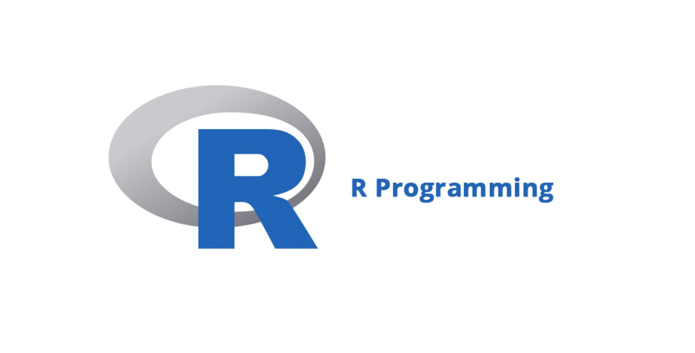

In this project I analysed the
current population vulnerable to/with cardiovascular disease in NHS Mid and East Essex and I also identified risk factors related to a stroke and
a heart attack that could be used as predictors sing LASO REGRESSOR and correlation heat map. I predicted the number of people in Mid and South Essex who are likely
to have a heart attack and the number of people who are likely to have a stroke in the next five years, as well as illustrating the CCG they are coming from.
This project involves both exploratory and explanatory data analysis of Prosper loan data from Kaggle using Python visualisation
libraries to investigate numerous single variables and build up to plots of numerous variables and illustrated interesting properties,
trends, and relationships between the variables.

I have been given a task by my manager to present the data on course revenue, and I have been provided with data on courses from
different topics to understand where opportunities to increase revenue may lie, and track the performance of courses. Another task is
to get the details of the top 20 most subscribed courses. View the project to learn about how I tackled the task and generate insights.

The aim of this project is to analyse bicycle sales data, identify customers who have or have not bought bicycles from the store,
and draw any general insights from the data. that can be used to improve sales of bicycle. Click on the project to view the dashboard
Using a patient's medical history, this project attempts to predict whether or not they will survive breast cancer.

This is a repository of all SQL projects.

The following report is based on word frequency comparisons and sentiment analysis of five (5) transcripts of TED talks of Marco Tempest and Michael Shermer.